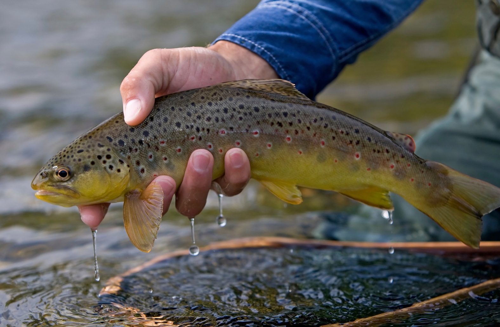
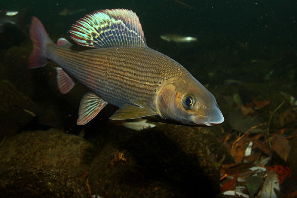

Podhale, to malowniczy region leżący w polskich Tatrach, który obfituje w liczne rzeki, strumienie, i jeziora, co sprawia, że jest również domem dla różnorodnych gatunków ryb. Ryby zamieszkujące te wody są zazwyczaj gatunkami charakterystycznymi dla górskich strumieni i jezior. Oto niektóre z ryb, które można spotkać na Podhalu:
-
Pstrąg: To jedna z najbardziej popularnych ryb w górskich potokach. Pstrągi podhalańskie są znane ze swojego smacznego mięsa i są chętnie łowione przez wędkarzy.
 -
Lipień: Gatunek ryby z rodziny łososiowatych, występujący również w górskich rzekach Podhala. Lipień jest ceniony przez wędkarzy za walkę na wędce.

Jeziorne ryby: Na Podhalu znajduje się kilka malowniczych jezior, które są domem dla różnych gatunków ryb, takich jak sielawa czy troć. Jeziora te są również atrakcyjne dla miłośników wędkarstwa.
Podhale przyciąga wędkarzy nie tylko ze względu na piękne krajobrazy, ale także ze względu na różnorodność ryb. Wiele rzek i strumieni na Podhalu jest dostępnych dla wędkarzy, oferując możliwość połowu różnych gatunków. Region ten stanowi nie tylko atrakcyjny obszar turystyczny, ale także ciekawe miejsce dla miłośników wędkarstwa, pragnących doświadczyć uroku górskich wód i złowić charakterystyczne dla tego regionu gatunki ryb.